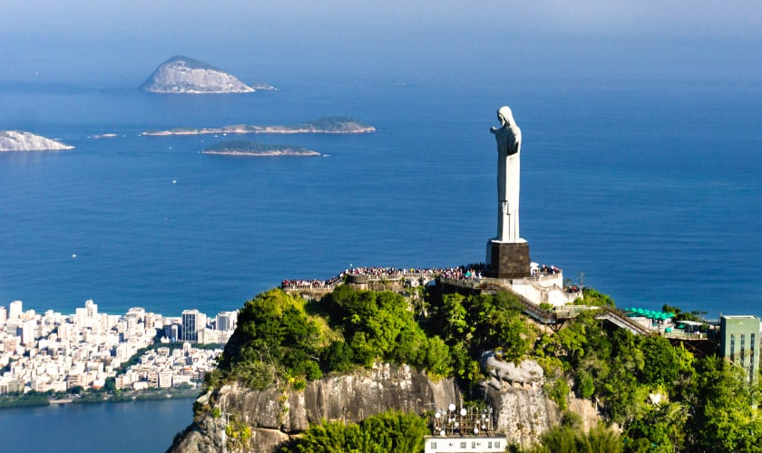
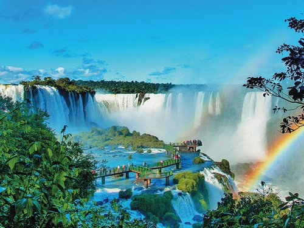
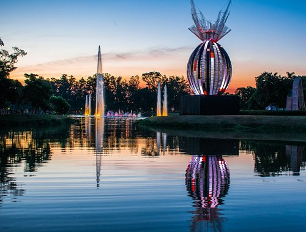
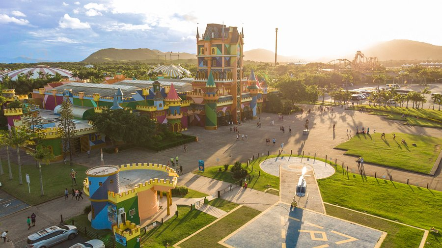

O Cristo Redentor, situado no topo do Morro do Corcovado, é uma das Sete Maravilhas do Mundo Moderno. Inaugurado em 1931, este monumento de 30 metros de altura, criado pelo engenheiro Heitor da Silva Costa com o apoio do escultor francês Paul Landowski
Rafael Gomes

O Parque nacional do Iguaçu, criado em 1939, abriga o maior remanescente de floresta Atlântica da região sul do Brasil. O Parque protege uma riquíssima biodiversidade, constituída por espécies representativas da fauna e flora brasileiras.
Rafael Gomes

O Parque do Ibirapuera, o destaque do bairro, é uma área para famílias e ótima para fazer um piquenique, relaxar, praticar esportes, fazer exercícios e apreciar arte. Ele fica cheio nos fins de semana e é um destino de lazer popular entre os moradores. Seus 1.584 quilômetros quadrados abrigam três lagos, dois museus e muitos outros espaços culturais.
Rafael Gomes

O maior parque temático da América Latina! Mais de 100 incríveis atrações para toda a família! Brinquedos radicais e familiares, 7 shows ao vivo diariamente e o mais belo zoológico do País!
Rafael Gomes

Copacabana é uma das praias mais emblemáticas do Brasil! Tornou-se famosa e hoje é um dos maiores pontos de interesse no Rio de Janeiro. Suas águas esverdeadas e geladas são um refúgio diante do calor que faz na cidade no verão.
Rafael Gomes